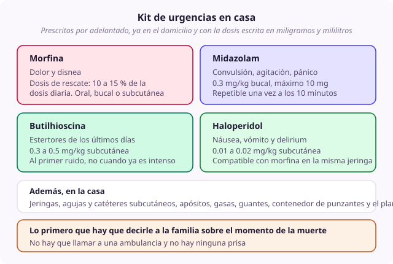

Ficha de síntoma
Plan de últimos días y kit de urgencias en casa
- Dominio
- Últimos días
- Nivel
- Intermedio
- Edades
- Cualquier edad
Es el documento y el conjunto de fármacos que permiten que un niño muera en su casa sin que la primera crisis termine en una ambulancia. Prepararlo con antelación es lo que separa una muerte acompañada de un traslado que nadie quería.
Por qué ocurre
Las crisis de los últimos días son previsibles: Dolor, disnea, agitación, convulsión y estertores. Si están anticipadas, con la medicación en casa y la dosis ya calculada, la familia puede resolverlas. Si no lo están, a las tres de la mañana solo queda llamar al servicio de emergencias.
Causas
- Progresión esperable de la enfermedad en la fase final
- Pérdida de la vía oral, que interrumpe todo el tratamiento de base
- Aparición de síntomas nuevos propios de esta fase
Qué evaluar
- Comprobar que existe un teléfono que responde veinticuatro horas y que lo atiende alguien que conoce el caso
- Comprobar que el plan está escrito, en lenguaje llano y en un lugar visible de la casa
- Comprobar que los fármacos están físicamente en el domicilio y no en una receta pendiente de surtir
- Verificar que la familia sabe administrarlos y lo ha practicado, no solo que se lo han explicado
- Confirmar que urgencias y la ambulancia de la zona conocen el plan y las decisiones documentadas
- Revisar si hay riesgos específicos que requieran preparación adicional, como el de hemorragia
Manejo no farmacológico
- Plan escrito con qué puede pasar, qué hacer, qué dar y a quién llamar
- Material: Jeringas, agujas, catéteres subcutáneos, apósitos, gasas, guantes, contenedor de punzantes y, si se usa, el infusor
- Formación práctica del cuidador con demostración y ensayo, no solo explicación
- Decir con claridad qué hacer cuando el niño muera, y sobre todo que no hay que llamar a una ambulancia y que no hay ninguna prisa
- Dejar por escrito a quién llamar, en qué orden y quién acudirá a certificar la muerte
- Anticipar los trámites posteriores con delicadeza pero con concreción
Manejo farmacológico
- Morfina
- Dosis de rescate calculada para ese niño, en miligramos y en mililitros, VO, bucal o SC. Dolor y disnea.
- Midazolam
- 0.3 mg/kg bucal o 0.2 a 0.3 mg/kg nasal, máximo 10 mg. Convulsión, agitación o crisis de ansiedad extrema.
- Butilhioscina
- 0.3 a 0.5 mg/kg SC. Estertores, administrada al primer ruido.
- Haloperidol
- 0.01 a 0.02 mg/kg SC. Náusea o vómito, y delirium.
- Preparación específica de riesgo
- Toallas oscuras y midazolam preparado. Si existe riesgo de hemorragia masiva.
Cuándo escalar
Si la familia no puede sostener la situación en casa, organizar el traslado de forma programada y presentarlo sin reproche. La reversibilidad de la decisión sobre el lugar debe decirse de forma explícita desde el principio.
Qué decir a la familia
Les voy a dejar las medicinas en casa, con la dosis ya calculada y escrita, para lo que pueda pasar de madrugada. Y quiero que practiquemos ahora cómo se dan, porque en el momento nadie recuerda instrucciones nuevas.
Qué evitar
- Dejar una receta en lugar de los fármacos ya en el domicilio
- Explicar la administración sin que la familia la practique
- No calcular las dosis por adelantado y dejar que se calculen en el momento
- Olvidar anticipar los trámites de los opioides, que es la causa más frecuente de que un buen plan falle
- No coordinar con urgencias y con la ambulancia, con el riesgo de una reanimación no deseada
- Presentar el domicilio como la única opción correcta y generar culpa en quien no puede sostenerlo
Perla clínica
Lo primero que hay que decirle a una familia sobre el momento de la muerte no es qué hacer, sino qué no hacer: No hay que llamar a una ambulancia y no hay ninguna prisa. La incertidumbre sobre ese punto concreto es lo que provoca reanimaciones no deseadas sobre niños que acaban de morir en paz en su casa.

kit domicilio prescripción anticipada plan escrito urgencias